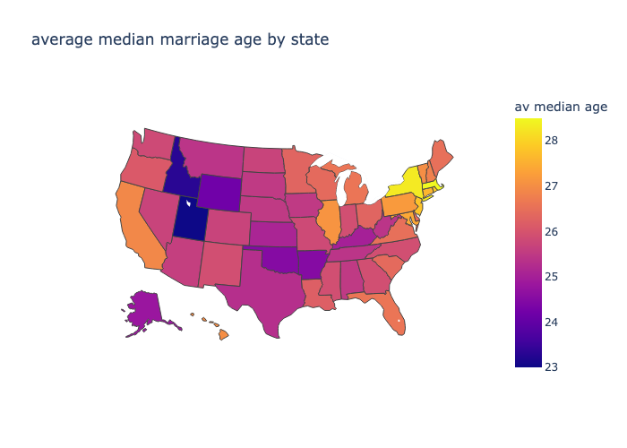

Marks
- Areas
- Represent proportion of electoral votes for each party with counts
- Each state on the map is distinct from the others
- Key at the bottom for district system breakdown
Channels
- Color
- Identity->Hue, Categorical-> represents the two election candidates
- This is a good choice because the two candidates are represented by two distinct colors.
- Shape
- Identity->Shape, Categorical: this is a good choice because each shape represents a state on the map and the goal is to show how each state's women voted. Additionally, the districts of Maine and Nebraska are shown on the bottom of the graphic as squares because they use a different system than the other states.
Colormaps
- Categorical, Identity
- This was a good choice because this is the only way to properly represent the identities of the voters' choice in each state. Red representing republicans and blue representing democrats, a categorical representation of the two candidates represented in the graphic. This blue/red dichotomy is shown in the electoral vote count, in each state and in the districts of Nebraska and Maine.
Marks
- Points
- Each point on a graph represents a single batted ball.
- Lines
- The line in the scoring value chart represents the average batted ball. Lines are also used to divide the chart into classifications of batted balls (Pop up, fly ball, line drive, ground ball)
- Areas
- The rectangles that make up the scoring value chart represent different groups of batted balls, ordinally by LWTS.
Channels
- Color
- Identity->Hue, Ordinal: this was a good choice because it shows where each batted ball lands on the spectrum of purple to orange, though it would be better conveyed with colors further from each other on the color wheel.
- Position
- Magnitude->Position, Quantitative: this was a good choice because each batted ball datum can be charted based on XY values of exit velocity and launch angle. This is especially good in conjunction with the scoring value color, as it shows a pattern.
Colormaps
- Ordered Attributes, divergent:
- This is a great choice because the colors represent a spectrum with two extremes and an average value. The values are ordered from low LWTS to high HWTS with purple and orange representing these respectively, with each color getting lighter as they approach the average.
Marks
- Areas
- Each area represents a US state with an individual marriage age
Channels
- Color
- Identity->Hue, Attribute: Ordinal->Quantitative/Sequential: this is a good choice because it shows a spectrum of varying marriage ages. Possibly a different color scheme could be more intuitive but the visualization clearly displays the meanings with a key.
Colormaps
- Ordered Attributes, divergent:
- Colors represent two extremes (yellow is a high marriage age, purple is a low age) and the colors in between represent intermediate values